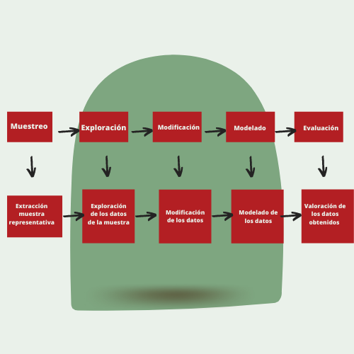

Introduccion
SEMMA ofrece un proceso fácil de entender, que permite un desarrollo y mantenimiento de proyectos de DM. Confiere así una estructura para su concepción, creación y evolución, ayudando a presentar soluciones a problemas empresariales así como encontrar los objetivos empresariales de DM. (Santos & Azevedo, 2005)

Sobre SEMMA
Definición: Proceso de selección, exploración y modelado de grandes cantidades de datos para descubrir patrones de negocio desconocidos.
- Acronimo: Sample, Explore, Modify, Model, Assess
- Historia: El proceso SEMMA fue desarrollado por el Instituto SAS
- Uso: Una de las principales metodologías utilizadas por los analistas en los proyectos de Data Mining
- Busca:
Seleccionar y transformar las variables predictivas más significativas
Facilitar la aplicación de técnicas exploratorias de estadística y visualización